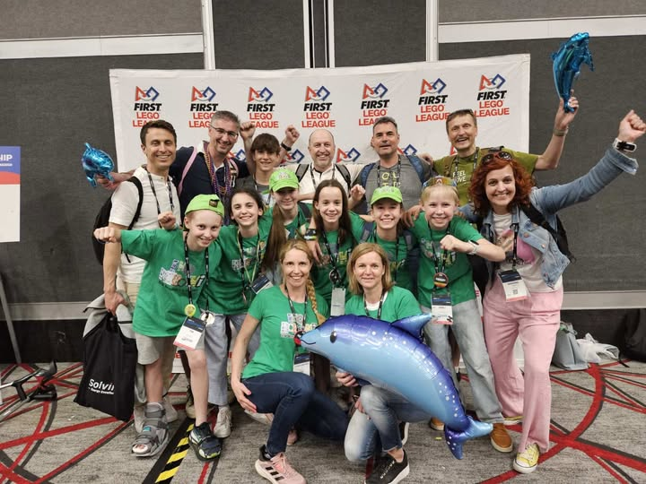
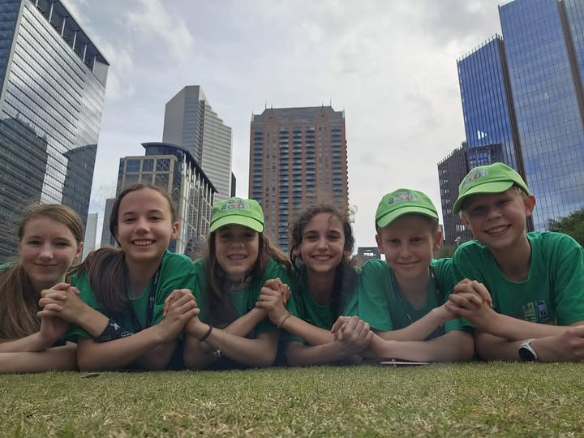

Naša ekipa se je sprva prijavila na regijsko tekmoanje, ki je potekala na OŠ Danile Kumar. Tam smo se uvrstili na državno tekmovanje in tekmovanje Adria, ki je bilo v Kopru. Odrezali smo se zelo dobro in bili smo tretji v Sloveniji in četrti v Adriji. Po dveh tednih smo izvedeli, da gremo v Houston v Texas v ZDA. Vsi smo bili zelo veseli in navdušeni.
Učiteljice so se s starši zmenile za letalske karte. Vsak je šel posebaj in smo v Ameriko prišli na različne datume. Večinoma so šli z nami očki in so nas zelo močno spodbujali. Tam smo se vsi nastanili v istem hotelu, kjer so že bile druge ekipe. Razpakirali smo in že naslednji dan smo imeli poskusno robotsko tekmo. Z drugimi ekipami smo se spoprijateljili in jih spodbujali, oni pa nas. Še nasledni dan smo imeli poskusno tekmo, potem pa je šlo za res. Sprva nam je robot nagajal, polomilo se nam je kolo in smo narobe povezali kable. Vse je šlo samo še navzdol. Na zadnji tekmi pa je robot dobil zagon in je naredil vse misije, ki smo jih sprogramirali. Bili smo tako veseli, da nam je uspelo, da smo imeli zvečer s sosednjo ekipo zabavo na bazenu. Bilo je res zabavno. Naslednji dan smo imeli predstavitev projektov. Šlo nam je super. Na koncu smo bili 80. od 180. prijavljenih. Bili smo zelo ponosni in uspešni. Potem smo odleteli domov in še danes se spominjamo kako je bilo lepo v Houstonu. Če bi lahko, bi to izkušnjo z veseljem ponovili.

